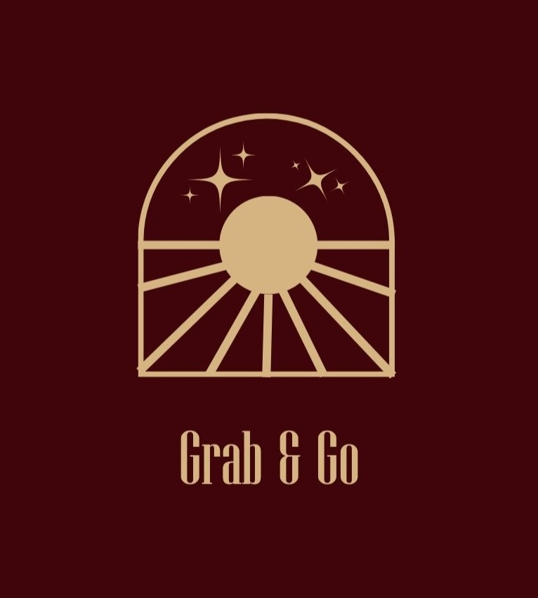

تأسس مطعم Grab & Go عام 2008 بحلم بسيط: تقديم أشهى الأطباق الشامية الأصيلة بأرقى مستويات الجودة. على مدار عشرين عاماً، تحوّل هذا الحلم إلى وجهة غذائية مميزة يرتادها آلاف الزبائن يومياً.

نحن هنا لخدمتكم على مدار الساعة
حي الميدان
دمشق، سوريا
011-5746514
0951773671
info@grab_go.com
order@grab_go.com
يومياّ
10:00 ص – 11:00 م
grab_go
Facebook · Instagram
نطاق التوصيل: 15 كم
رسوم التوصيل: 5,000 ل.س